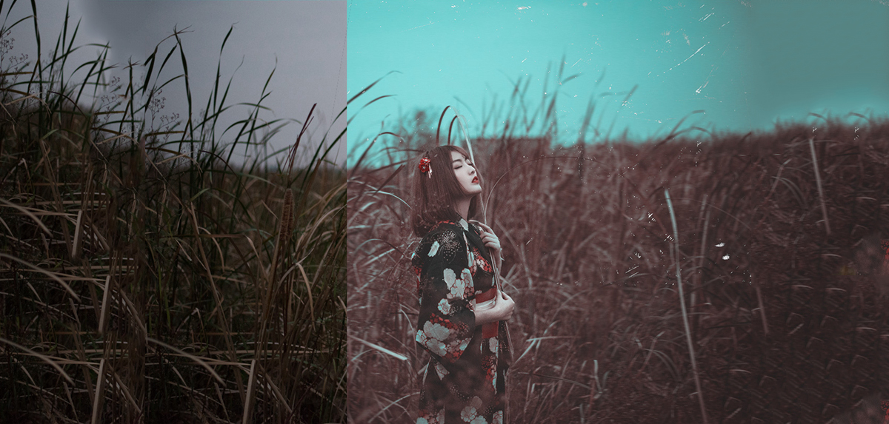

小清新已腻？快来试试暗黑情绪风后期
发表时间：2016年11月25日 来源：SJCL摄影社区 作者：阿末 编辑：Rorschach大家好，我是阿末，今天为大家带来一组不太一样的外景人像后期。独具一格的风格，很容易成为你与众不同的标签，想要在人像方面有所突破，一定不只能局限于大众的流行趋势，看惯了糖水片、小清新的你，赶紧过来洗眼睛吧！大家好，我是阿末，今天为大家带来一组不太一样的外景人像后期。独具一格的风格，很容易成为你与众不同的标签，想要在人像方面有所突破，一定不只能局限于大众的流行趋势，看惯了糖水片、小清新的你，赶紧过来洗眼睛吧！
 前期情况- 拍摄场地：江边的一片芦苇地，已经全部枯黄了，秋冬季节比较普遍常见，所以大家如果想拍类似风格的作品场景也比较容易找到。
- 拍摄时间：由于事先在一个废弃的院子内拍了一下，所以转换到芦苇地的时候，天色已经接近全黑了。这个季节就是这样说黑就黑，所以事先一定要规划好，不然很容易像我这样在时间上出现问题。
- 拍摄器材：器材使用了尼康D600+50MM F1.8G，大光圈加上尼康自带的比较强的对焦辅助灯才能完成后面这段拍摄，因为天已经全完黑掉了，换成佳可能就必须得依靠补光设备来实现对焦了，说实话还就喜欢尼康 这一点的。
- 服装准备：因为事先就决定要拍情绪暗黑颓废的画风，所以就准备了一套日系和服，妹子自己化妆造型（大拇指）。
- 拍摄场地：江边的一片芦苇地，已经全部枯黄了，秋冬季节比较普遍常见，所以大家如果想拍类似风格的作品场景也比较容易找到。
- 拍摄时间：由于事先在一个废弃的院子内拍了一下，所以转换到芦苇地的时候，天色已经接近全黑了。这个季节就是这样说黑就黑，所以事先一定要规划好，不然很容易像我这样在时间上出现问题。
- 拍摄器材：器材使用了尼康D600+50MM F1.8G，大光圈加上尼康自带的比较强的对焦辅助灯才能完成后面这段拍摄，因为天已经全完黑掉了，换成佳可能就必须得依靠补光设备来实现对焦了，说实话还就喜欢尼康 这一点的。
- 服装准备：因为事先就决定要拍情绪暗黑颓废的画风，所以就准备了一套日系和服，妹子自己化妆造型（大拇指）。
- 拍摄时间：由于事先在一个废弃的院子内拍了一下，所以转换到芦苇地的时候，天色已经接近全黑了。这个季节就是这样说黑就黑，所以事先一定要规划好，不然很容易像我这样在时间上出现问题。
- 拍摄器材：器材使用了尼康D600+50MM F1.8G，大光圈加上尼康自带的比较强的对焦辅助灯才能完成后面这段拍摄，因为天已经全完黑掉了，换成佳可能就必须得依靠补光设备来实现对焦了，说实话还就喜欢尼康 这一点的。